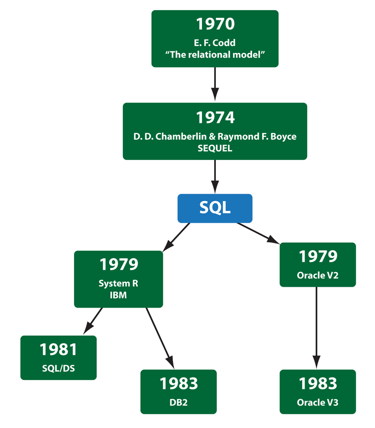

La historia de SQL (que se pronuncia deletreando en inglés las letras que lo componen, es decir «ese-cu-ele») empieza en 1974 con la definición, por parte de Donald Chamberlin y de otras personas que trabajaban en los laboratorios de investigación de IBM, de un lenguaje para la especificación de las características de las bases de datos que adoptaban el modelo relacional. Este lenguaje se llamaba SEQUEL (Structured English Query Language) y se implementó en un prototipo llamado SEQUEL-XRM entre 1974 y 1975. Las experimentaciones con ese prototipo condujeron, entre 1976 y 1977, a una revisión del lenguaje (SEQUEL/2), que a partir de ese momento cambió de nombre por motivos legales, convirtiéndose en SQL. El prototipo (System R), basado en este lenguaje, se adoptó y utilizó internamente en IBM y lo adoptaron algunos de sus clientes elegidos. Gracias al éxito de este sistema, que no estaba todavía comercializado, también otras compañías empezaron a desarrollar sus productos relacionales basados en SQL. A partir de 1981, IBM comenzó a entregar sus productos relacionales y en 1983 empezó a vender DB2. En el curso de los años ochenta, numerosas compañías (por ejemplo Oracle y Sybase, sólo por citar algunos) comercializaron productos basados en SQL, que se convierte en el estándar industrial de hecho por lo que respecta a las bases de datos relacionales.
En 1986, el ANSI adoptó SQL (sustancialmente adoptó el dialecto SQL de IBM) como estándar para los lenguajes relacionales y en 1987 se transfomó en estándar ISO. Esta versión del estándar va con el nombre de SQL/86. En los años siguientes, éste ha sufrido diversas revisiones que han conducido primero a la versión SQL/89 y, posteriormente, a la más importante SQL/92 y sus sucesivas versiones.
| Año |
Nombre |
Alias |
Comentarios |
| 1986 |
SQL-86 |
SQL-87 |
Primera publicación hecha por ANSI. Confirmada por la Organización Internacional de Normalización en 1987. |
| 1989 |
SQL-89 |
|
Revisión menor. |
| 1992 |
SQL-92 |
SQL2 |
Revisión mayor. |
| 1999 |
SQL:1999 |
SQL2000 |
Se agregaron expresiones regulares, consultas recursivas (para relaciones jerárquicas), triggers y algunas características orientadas a objetos. |
| 2003 |
SQL:2003 |
|
Introduce algunas características de XML, cambios en las funciones, estandarización del objeto sequence y de las columnas autonuméricas.4 |
| 2005 |
SQL:2005 |
|
ISO/IEC 9075-14:2005 Define las maneras en las cuales SQL se puede utilizar conjuntamente con XML. Define maneras de importar y guardar datos XML en una base de datos SQL, manipulándolos dentro de la base de datos y publicando el XML y los datos SQL convencionales en forma XML. Además, proporciona facilidades que permiten a las aplicaciones integrar dentro de su código SQL el uso de XQuery, lenguaje de consulta XML publicado por el W3C (World Wide Web Consortium) para acceso concurrente a datos ordinarios SQL y documentos XML. |
| 2008 |
SQL:2008 |
|
Permite el uso de la cláusula ORDER BY fuera de las definiciones de los cursores. Incluye los disparadores del tipo INSTEAD OF. Añade la sentencia TRUNCATE.5 |
| 2011 |
SQL:2011 |
|
Datos temporales (PERIOD FOR). Mejoras en las funciones de ventana y de la cláusula FETCH. |
| 2016 |
SQL:2016 |
|
Permite búsqueda de patrones, funciones de tabla polimórficas y compatibilidad con los ficheros JSON. |
El hecho de tener un estándar definido por un lenguaje para bases de datos relacionales abre potencialmente el camino a la intercomunicabilidad entre todos los productos que se basan en él. Desde el punto de vista práctico, por desgracia las cosas fueron de otro modo. Efectivamente, en general cada productor adopta e implementa en la propia base de datos sólo el corazón del lenguaje SQL (el así llamado Entry level o al máximo el Intermediate level), extendiéndolo de manera individual según la propia visión que cada cual tenga del mundo de las bases de datos.
Donald D. Chamberlin es un científico informático estadounidense mejor conocido como uno de los principales diseñadores de la especificación del lenguaje SQL original con Raymond Boyce. También hizo contribuciones significativas al desarrollo de XQuery.
{kind=link}